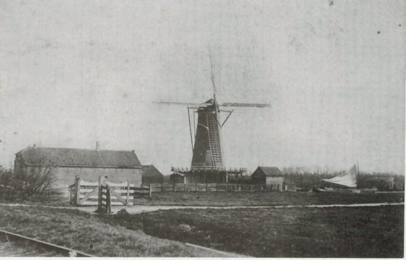
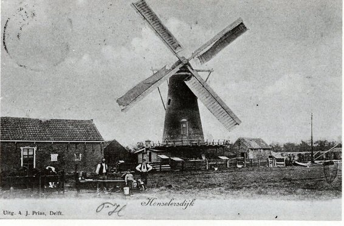
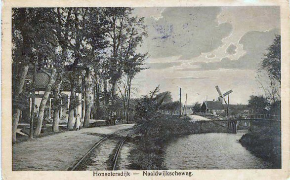

Honserlersdijk verdwenen molens

|
 Korenmolen gebouwd in 1853, afgebroken in 1966. |
 Korenmolen 2 |
|
 Korenmolen 3 |
 Korenmolen |
.jpg) Brand in de korenmolen. |
 Korenmolen 4 |
 Deze pagina is gemaakt op 25-12-2006: Tijd: 15:29 uur.
Deze pagina is gemaakt op 25-12-2006: Tijd: 15:29 uur.

Laatste wijziging: 20-11-2013 Tijd 20:50 uur
Met dank aan: de
Hollandsche molen/Rob Pols/Hans Klok/Gerard Barendse/
Erwin Esselink/Teun van der Sloot/voor het gebruik van de foto's